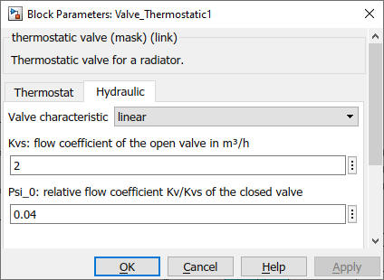

Valve_Thermostatic
Path: CARNOT/Hydraulics
Purpose:
Thermostatic control valve for room heating system.
Description:
The thermostatic valve is used to reduce the mass flow in a space heating system
when temperature of the sensor reaches its desired value. The characteristics of
a typical valve are used for the pressure drop. The temperature of the sensor is
delayed by its thermal intertia from the incoming temperature.
The model uses Valve and
Thermostat_Proportional.
Input:
| THBin | : | Thermo-Hydraulic Bus at the inlet of the valve |
| Troom | : | actual room temperature in °C |
| Tset | : | set point temperature in °C |
Output:
| THB | : | Thermo-Hydraulic Bus at the outlet of the valve |
| pos | : | current valve postion (0..1) |
Parameters and Dialog Box:

Examples:
Open the example explorer from the Matlab command window
ExampleBrowser
or load the examples via the CARNOT library.
Characteristics:
| Direct Feedthrough | : | Yes |
| Sample Time | : | Inherited from driving block |
| Vectorized | : | No |